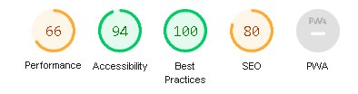
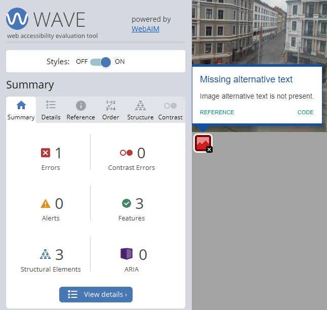
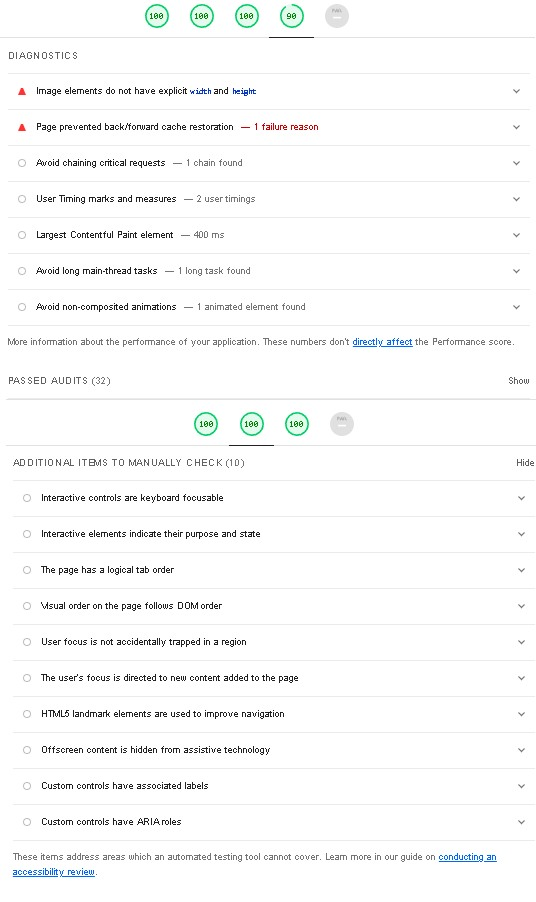

Accessibility log
First edition
In this page, we will talk about accessibility and how we can utilize tools like lighthouse and WAVE to make our page better. Our process consists of making a page. Afterwards, test the page with WAVE and lighthouse tool. We document and log the feedback results which we get from the lighthouse and the WAVE tool. Then we improve our pages on the website by learning and documenting from using the lighthouse tool. Hence why we use the title "Accessibility log".
In the first edition, we have established a design for each page. We also have made content for every page. Below is the first version of the "about" page, this is one of our pages we tested:


By analyzing the results, we concluded that there were some things that we had to change. The design itself did not have sufficient color contrast, therefore we changed this. When removing the background color on the side of the page, it resulted in better scores on lighthouse. We also seem to get feedback about meta not being included in the page. This is important to include because this allows us to fit the content according to the user's device.
There were also feedback revolving around image size and properly sized images. The file size of the pictures were too big for the website itself, therefore it took too long to load in the pages. By changing pictures from PNG formats to JPEG it will make the image file size smaller. In addition, we also changed the resolution on some images. Some of the images were very big as the original size, we had to downsize them by making the resolution smaller. This resulted in faster loading times.
Alternate text on images was something that were missed at the start. By doing a WAVE test, we could pinpoint which image that did not have an alternate text.

Final version
When testing the final version with lighthouse, we could say that we are content with our websites. The results came in, and we got 100 score troughout the test. This shows us that our website is well functioned. By improving with lighthouse feedback, we can be even more sure that our website has high quality when it comes to performance, accessibility and best practice. It is also important to note that by making the website have faster loading times, we contribute to less data being uploaded, therefore more cost-efficientl and requires less upload/download speed.

By analyzing the picture above, we can safely say that most issues have been resolved. However, there are two issues still maintaining. These issues were something we tried to fix, but the issues still did not get removed. We deemed theese issues as something that cannot be resolved, a bug.